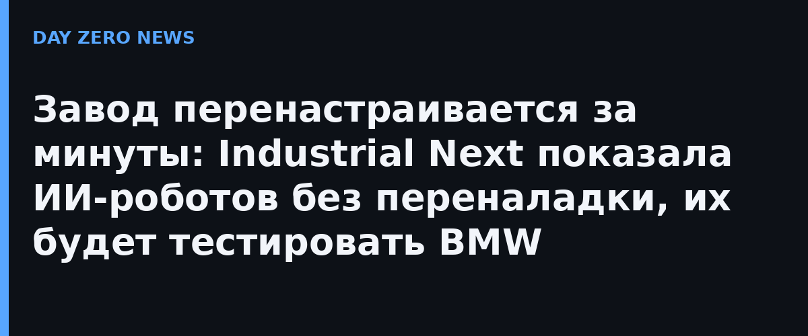

В большинстве заводов автоматизация неподвижна: робота программируют под одну конкретную задачу и один продукт. Смена модели означает перепрограммирование и физическую переналадку — недели, а то и месяцы простоя. Основатели Industrial Next — экс-инженеры Tesla Лукас Панкау и Аллен Пан — мучились именно с этим: при них на Tesla можно было гонять машинное обучение при проектировании машин, но не заставить заводское оборудование 1980-х годов гибко менять задачи.
Компания строит самодостаточные роботизированные станции на собственных фундаментальных моделях, которые связывают зрение, контекст задачи и движение робота. Новым навыкам ячейки учатся через симуляцию и демонстрацию, а не через прописанные скрипты. Ключ к точности — движок симуляции, максимально близкий к реальной физике: по словам Панкау, это позволяет роботам выполнять высокоточные задачи «почти не глядя на деталь». Линию можно переставлять, комбинировать и перебрасывать между продуктовыми линейками — перенастройка занимает минуты вместо недель.
С официального сайта: 99,9%+ точность и завершение задачи с первой попытки, deployment на крупнейшем контрактном производителе электроники и у автомобильного поставщика первого уровня (Tier 1). Ячейка работает в основной линии 24/7 и уже быстрее живого работника. Анонс, прозвучавший на сцене Disrupt 13 октября: BMW Group Technology Office оценит «ловкие» манипуляции Industrial Next на своём производстве. Отдельного пресс-релиза компания не публиковала — анонс сделан на сцене, а характеристики размещены на официальном сайте.
В отличие от языковых моделей, робототехника не может научиться на интернетах: данных о тонких физических операциях почти нет, поэтому весь упор — в симуляцию (sim-to-real). Именно поэтому, считают основатели, к 2026 году роботы научились красиво танцевать, но не собирать прецизионные узлы — вторым как раз и занимаются ячейки Industrial Next.